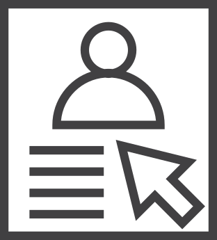
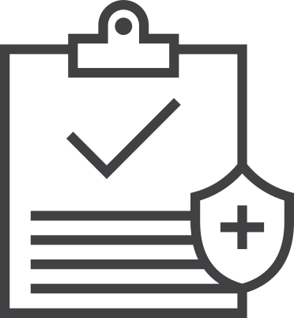
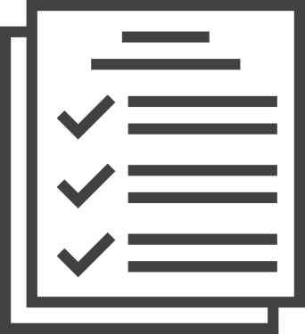
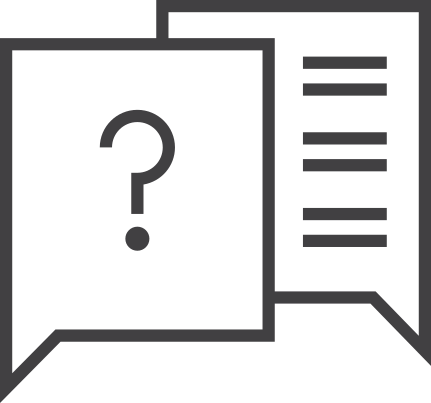
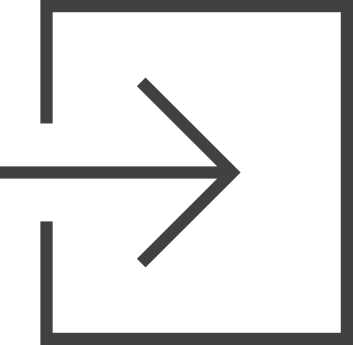

Aplikasi Masuk
Kami mencari talenta-talenta untuk pekerjaan yang sesuai dalam berbagai tingkatan organisasi. Proses rekrutmen dilakukan secara selektif agar mendapat calon karyawan terbaik. Berikut alur proses rekrutmen di INDRACO GLOBAL INDONESIA mulai dari mengirimkan lamaran sampai ke tahap penerimaan karyawan.




